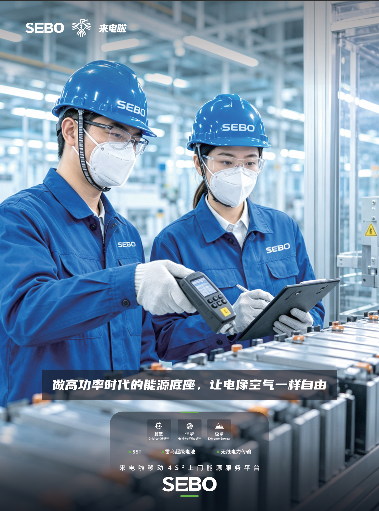
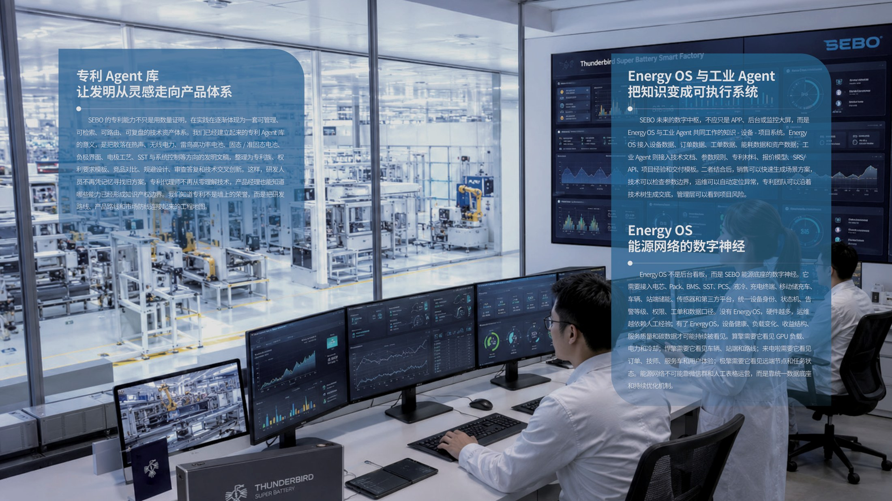
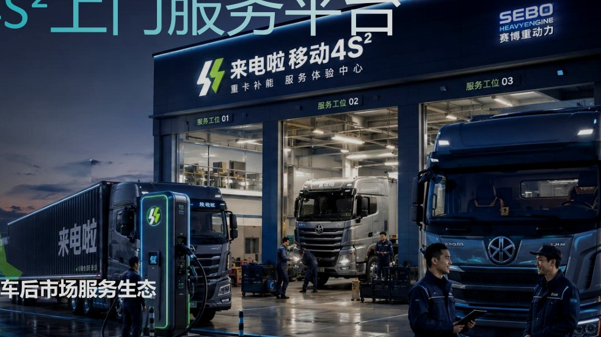

2026.07.13 · 网站更新

SEBO · 高功率时代的能源基础设施
SEBO 构建面向 AI 算力、重载运力与关键任务的高功率能源基础设施：三擎进入场景，三硬件构筑底座，智鉴连接决策与执行，来电啦完成运营服务。
高功率时代 · 稳定交付、调度与验证
芯片、重载设备和无人系统正在变强，能源系统却仍按低动态、固定坐标和平均负荷设计。SEBO 让功率可规划、可交付、可经营。
TECHNOLOGY & PRODUCTS
技术与产品
每类产品都有独立页面、应用边界、资料入口和工程咨询路径。

LAIDIANLA MOBILE 4S²
来电啦移动 4S² 上门服务平台
四个 S 独立可进入，覆盖续航、服务、审查与托管。

按班次组织移动补能、固定节点、调度与应急供电。
续航与供能连续性→
将诊断、保养、维修、备件、技师与工单 SLA 组织为可追溯服务。
可追踪维护→
围绕车况、电池、安全、隐患、复检与证据形成风险识别闭环。
风险与复检证据→
通过 Battery Passport、SOH、质保、资产和 TCO 管理生命周期。
资产健康与责任→以固定节点承载高频需求，以移动服务覆盖不确定与应急窗口。
场站吞吐与服务协同→从车辆、电池、轮胎与设备状态形成建议、工单、授权与签收闭环。
车况可见与责任闭环→
一个入口把电送到车辆需要的地点，并记录调度、作业与签收。
能源按需抵达→在车辆停下前后接住能源与服务，按工单协调补能、诊断和救援。
恢复时间与工单闭环→
把电池身份、健康、质保、调度和残值纳入可运营的资产账本。
电池全生命周期运营→让本地服务能力进入统一标准、质量、培训、工单和结算体系。
标准化生态交付→REFERENCE APPLICATIONS
17 项典型应用
典型应用用于解释工况、参考架构与适用边界；客户案例只在客户授权、基线、结果与 M&V 完整时发布。
NEWS & ENGINEERING INSIGHTS
新闻、案例与工程知识
新闻、工程洞察、典型应用与资料下载形成可检索的内容中心。
下一步
提交项目、技术、合作、参访或人才需求，进入对应的责任窗口。
前往联系入口